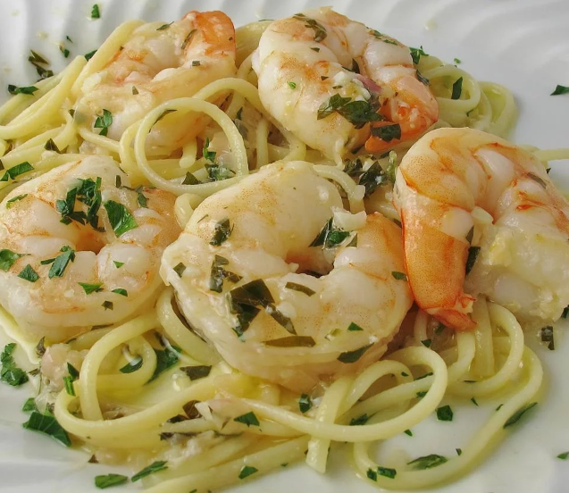

Shrimp Scampi with Pasta

Description
Tender shrimp and buttery herb sauce combine for an ultra-satisfying
pasta dish. "This dish was very easy and extremely tasty," says user
Marcellino. "I'm so happy to find such an awesome dish to add to my
favorites."
Ingredients
- 1 (16 ounce) package linguine pasta
- 2 tablespoons butter
- 2 tablespoons extra-virgin olive oil
- 2 shallots, finely dices
- 2 cloves garlic, minces
- 1 pinch red pepper flakes (Optional)
- 1 lemon, juiced
- 2 tablespoons butter
- 1 pinch kosher salt and freshly ground pepper
Steps
- Bring a large pot of salted water to a boil; cook linguine in
boiling water until nearly tender, 6 to 8 minutes. Drain.
- Melt 2 tablespoons butter with 2 tablespoons olive oil in a large
skillet over medium heat. Cook and stir shallots, garlic, and red
pepper flakes in the hot butter and oil until shallots are translucent,
3 to 4 minutes. Season shrimp with kosher salt and black pepper; add to
the skillet and cook until pink, stirring occasionally, 2 to 3 minutes.
Remove shrimp from skillet and keep warm.
- Pour white wine and lemon juice into skillet and bring to a boil
while scraping the browned bits of food off of the bottom of the
skillet with a wooden spoon. Melt 2 tablespoons butter in skillet,
stir 2 tablespoons olive oil into butter mixture, and bring to a
simmer. Toss linguine, shrimp, and parsley in the butter mixture
until coated; season with salt and black pepper. Drizzle with 1
teaspoon olive oil to serve.